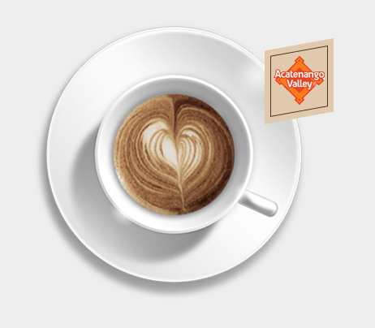

El café
Es la bebida que se obtiene a partir de los granos tostados y molidos de los frutos de la planta del café (cafeto). Es una bebida altamente estimulante por su contenido de cafeína.
Tras la conquista de Guatemala por los españoles en los siglos xv y xvi se establecieron varios asentamientos humanos en el área que ocupa el moderno departamento Chimaltenango, había dos tipos de asentamientos: las reducciones y doctrinas en donde se llevaba a los indígenas conquistados para trabajar en los repartimientos o en las tierras del clero regular, respectivamente y las poblaciones de españoles y de criollos. De acuerdo a una versión de la historia de Acatenango, el pueblo de criollos en el área estaba localizado originalmente en donde se encuentra el moderno municipio Zaragoza, a la que llamaron «La Villa De Zaragoza» en honor a la provincia de Zaragoza, en su natal España, después de vivir por un tiempo en este sitio, se trasladaron a Patzicía y luego hacia Acatenango. Ahora bien, de acuerdo a otra versión, Acatenango habría estado en la jurisdiccón de la capital de la Capitanía General de Guatemala, la ciudad de Santiago de los Caballeros de Guatemala y poco a poco se fueron asentando pobladores hasta formar el casco urbano que dio origen al municipio.[cita requerida] La Familia Higueros Estrada comenzó a cultivar café en Acatenango en la década de los 50 del siglo XX La Unión atiende a más de 15 agricultores en la comunidad actualmente, La Unión II Cohe es parte de Denominación de Origen Café Acatenango APDOCA-ONG.

El arte convertido café.
Es la bebida que se obtiene a partir de los granos tostados y molidos de los frutos de la planta del café (cafeto). Es una bebida altamente estimulante por su contenido de cafeína.
Tras la conquista de Guatemala por los españoles en los siglos xv y xvi se establecieron varios asentamientos humanos en el área que ocupa el moderno departamento Chimaltenango, había dos tipos de asentamientos: las reducciones y doctrinas en donde se llevaba a los indígenas conquistados para trabajar en los repartimientos o en las tierras del clero regular, respectivamente y las poblaciones de españoles y de criollos. Leer más...
Se cultiva bajo una sombra densa de 1.800 a 2.000 m.s.n.m., y se beneficia de un suelo volcánico, arenoso y rico en minerales y una precipitación anual de 1.800 a 2.000 mm. La cosecha dura de diciembre a marzo. Ubicada a 1 km del municipio de Acatenango, Chimaltenango, la Finca la unión cuenta con plantaciones de café catuai, caturra y bourbom. Comprometidos con las prácticas ambientales y la legislación vigente, Finca la Unión implementa constantemente innovaciones técnologicas amigables con el ecosistema.